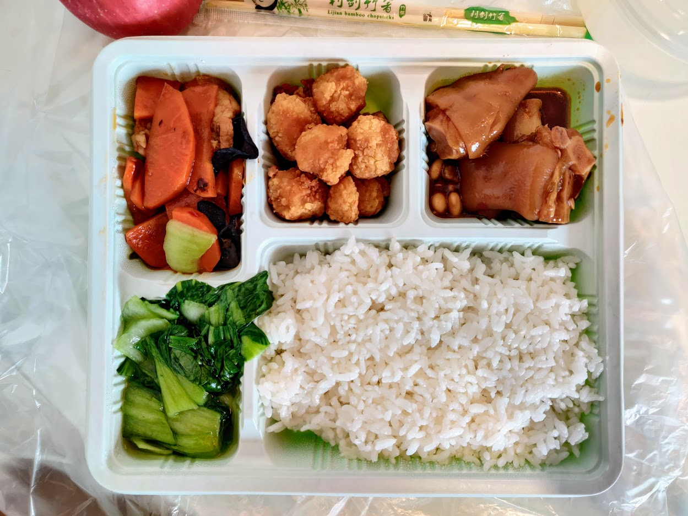
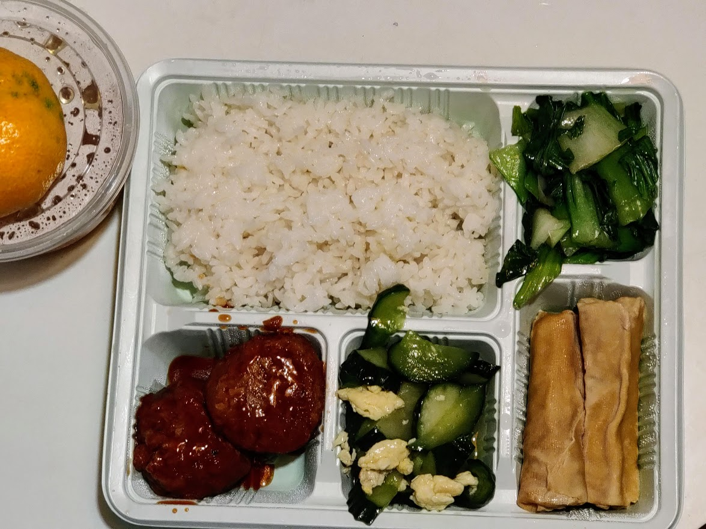
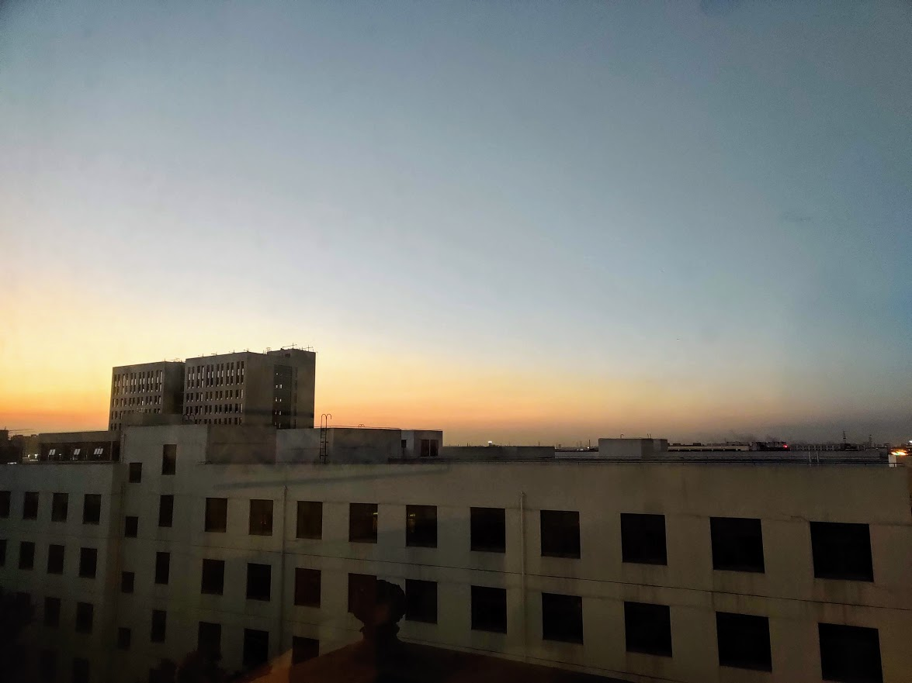
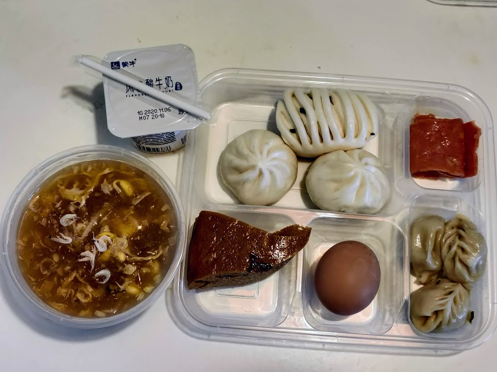
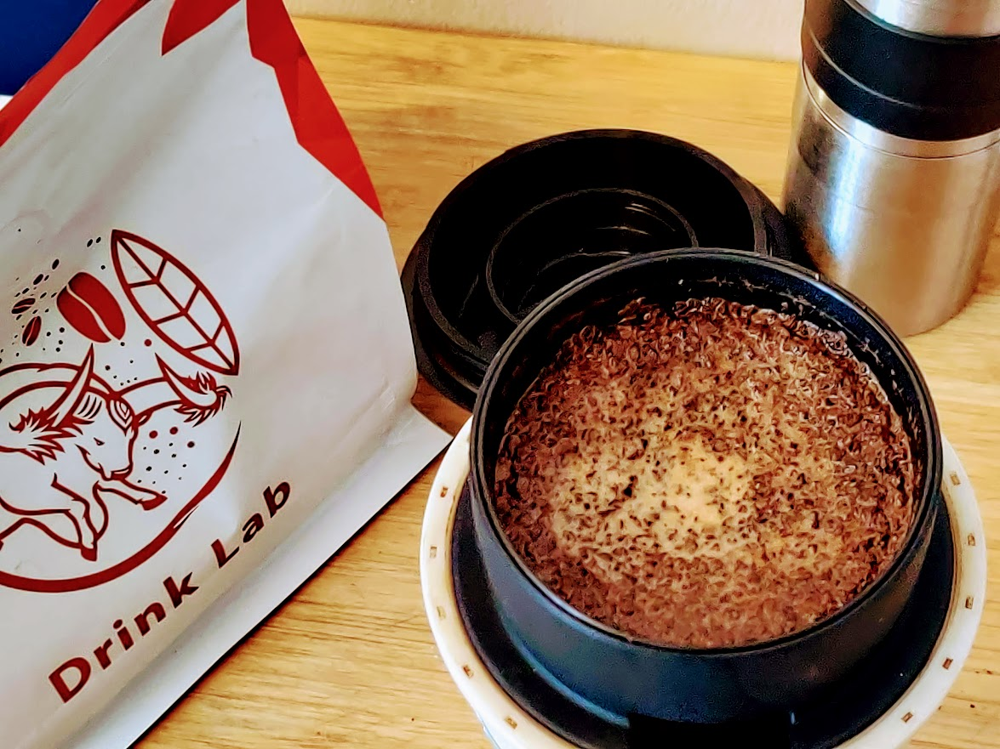
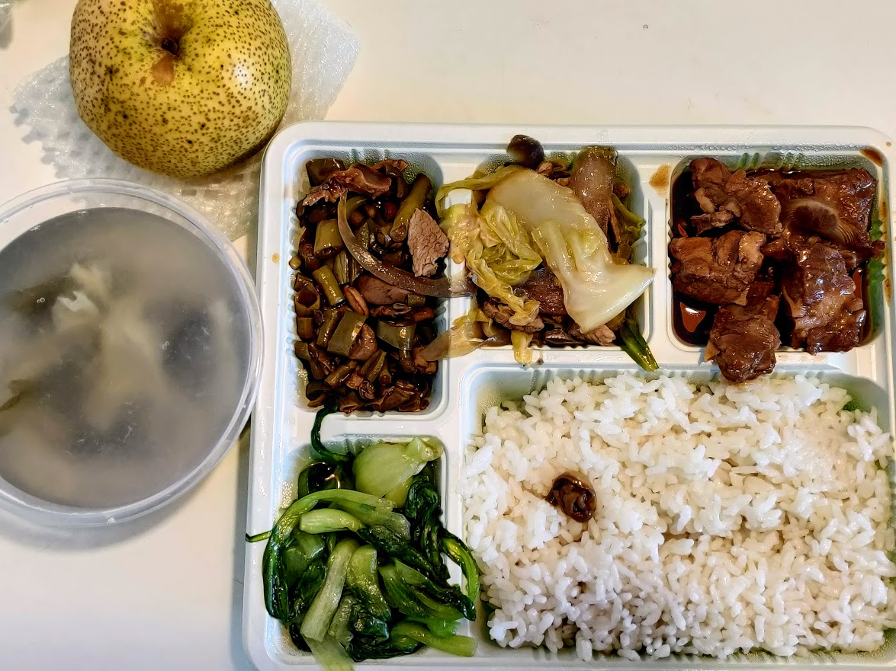
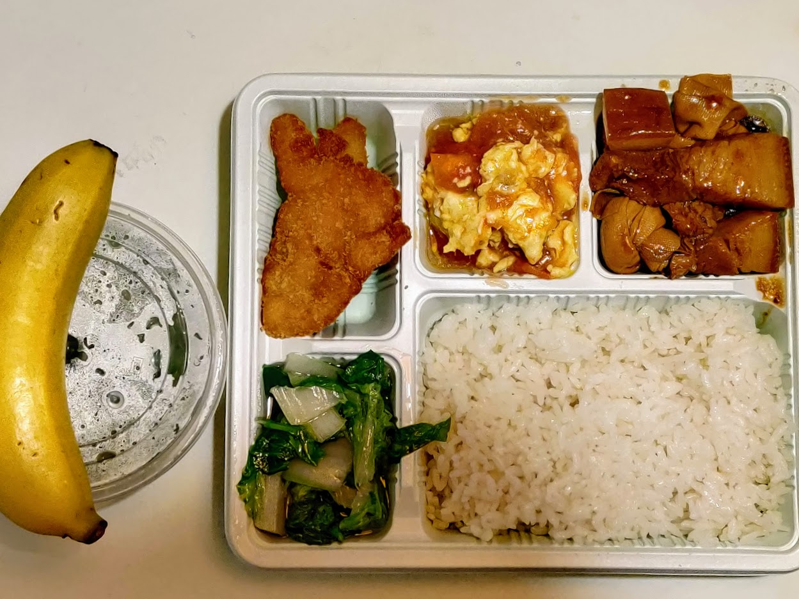

柬埔寨至上海 隔离记录 Day2
昨天的记录还没写完，折腾hexo和模板到半夜。之前的文章被我一举清空，还好回收站都里面都有。
继续昨天的记录。
11-11
午餐，上午办理好入住以后，不到中午就饿了。背包里面还有航班上发的一块小蛋糕。
11点40分，几声敲门之后，午餐终于送来了。睽违已久的中餐，虽然只是一份盒饭。

吃完午餐，本想看一会书，困意终于袭来。
晚餐，竟然有狮子头。

昨晚的晚霞

由于昨天下午睡着了，一整天都没有人来测量我的体温。打给酒店前台的电话一直是无人接听，这个隔离酒店也没有像别的酒店一样建立一个微信联系群。只添加了一个医生的微信，用于紧急情况联络。
6点半准时起床，洗漱整理以后继续研究hexo的模板。7点50分，终于敲门送早餐来了。
早餐的包装盒跟昨天的不一样，应该是另外一个送餐公司负责的。今天早餐的碳水很丰富，总量不算很多。习惯丰盛早餐的我需要适应一下。

吃完早餐，8点30分又传来敲门声，这次是测量体温了。询问了工作人员，昨天只测量一次体温，就是办理入住的时候。今天开始一天两次，每次测量后还需要扫码填报记录。
隔离的日程需要自己安排，还是尽量保持日常的生活节奏。这次回国带着Rivers的便携滤杯，把手动磨的颗粒调粗一点，keep making coffee。

今天上海的天气也很棒，呼吸着微微凉意的空气。
午餐，排骨很好吃，咸甜口味。泡椒豇豆鸡杂，难得有辣味的菜，虽然鸡杂的数量可以忽略不计了。迷惑之一：这边的汤为什么都要勾芡？

今天的晚餐，豆腐白菜鸡蛋汤，炸鱼排偏老，红烧肉4块，百叶结4块。

落地后的第一次核酸结果今天出来了，应该可以按期结束隔离。希望接下来的12天一切都顺利。关于建康码的问题，咨询了服务人员，但是没得到确定的说明。只是说离开酒店的时候会有一份隔离证明以及一份核酸检测报告。大多数地区凭着这两份文件应该是可以同行的。上海一定要挺住啊。